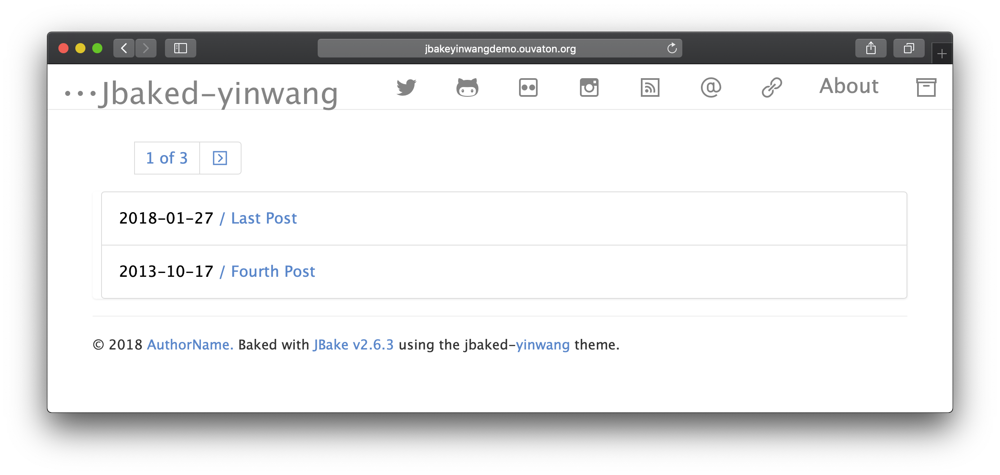

Voici un nouveau thème pour jbake, il est inspiré du thème ynwang un thème pour Hugo
En résumé il est simple, facile a utiliser et lisible.
Un petit screenshot ci dessous

En plus de ce site il y a une version de démo synchronisé avec le repository principal
Vous pouvez trouver un dépot github
avec la derniere version en cours. L'ancien thème jbake-uno
sera archivé et certaine de ses fonctionnalités seront porté sur ce nouveau thèmes.
N'hésitez pas a contribuer.